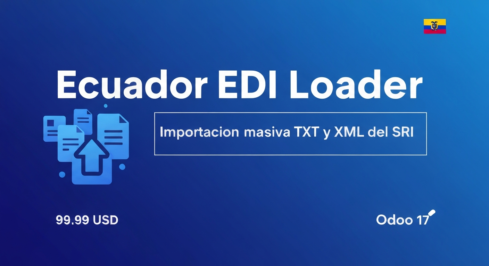
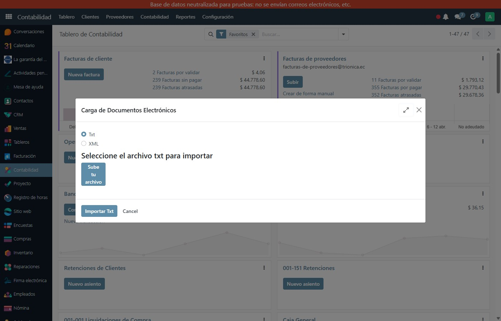
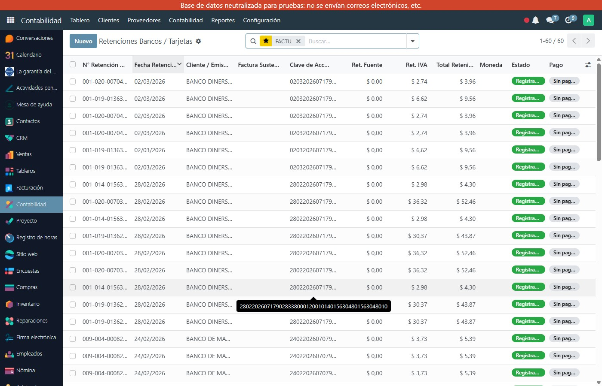
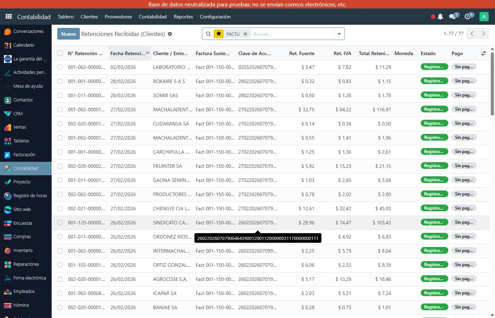

Importa masivamente retenciones y comprobantes electrónicos desde archivos TXT y XML del SRI directamente en Odoo 17. Elimina la carga manual de datos y reduce errores contables.
Carga masiva de retenciones en el formato TXT que genera el SRI. Crea automáticamente los asientos de retención en Odoo con todos sus impuestos y bases.
Procesa comprobantes electrónicos XML del SRI: facturas de proveedor, notas de crédito, notas de débito y retenciones recibidas.
Registra retenciones vinculadas a una factura existente o crea retenciones independientes cuando el comprobante aún no está en Odoo.
Procesa y registra automáticamente las retenciones bancarias de tarjeta de crédito como asientos contables en el diario correspondiente.
Botón "Register PDC Cheque" en facturas para registrar cheques posfechados (PDC) directamente desde el formulario de la factura.
La lista de facturas muestra el estado del cheque posfechado (PDC) de cada documento para control rápido del flujo de cobros.
Gestiona la solicitud de anulación de comprobantes electrónicos ante el SRI directamente desde el formulario de la factura en Odoo.
Permite devolver al estado correcto facturas que fueron anuladas en el SRI, sincronizando el estado EDI con la realidad del registro oficial.
Desde el portal del SRI descarga el archivo TXT de retenciones o el XML del comprobante electrónico recibido.
Ve a Contabilidad → Importar Documentos SRI, sube el archivo y el módulo procesa cada línea automáticamente.
El módulo crea las retenciones, facturas o asientos correspondientes. Verifica el resultado en el reporte de importación.

Diálogo de importación: elige formato TXT o XML, sube el archivo del SRI y presiona Importar

Lista de Retenciones Bancos / Tarjetas: N° Retención SRI, Clave de Acceso, Ret. Fuente, Ret. IVA, Total Retenido

Retenciones Recibidas (Clientes): vinculadas a factura sustento con clave de acceso SRI y montos de retención